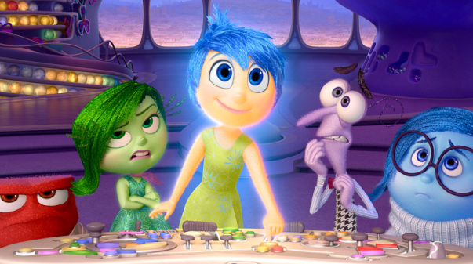

by Michael Simon
Alright, if you've seen a Disney/Pixar animated feature, then you probably know there's almost always a lesson or a moral you're supposed to take away from it. Monsters Inc. showed you to be fearless. Toy Story focused on loyalty. Finding Nemo was teamwork. The Incredibles had family values. Up was the importance of navigating a flying house through the forests of Africa. And in a way, Inside Out was no different. And in another way, Inside Out was completely different. It had a moral and lesson to teach but it didn't go to insane lengths to find it.
It was life - an abstract representation of life, but life nonetheless. There were no talking toys or monster worlds, no superhero families or flying dogs; it was simply the inner workings of a child's mind, a mind that everyone in the audience could instantly relate to. Imagination, abstract thought, dreams, deja vu, long term memory, trains of thought, imaginary friends - it was all in there, somewhere. At its core, it's a coming of age story of how a girl learns to cope with changes in her world that are beyond her control.
Beyond that, it's about the importance of human emotion and how the mind is like a puzzle where all the pieces matter. Life won’t always be happy, and life won’t always be sad, but there are always moments, represented in the film as “core memories”, the formulate you to be the person you are. You can't just choose to ignore something simply because it's sad. That's not how life is meant to work and that's exactly what this movie tries to teach and it succeeds tremendously. There is no set antagonist in this movie just as there is no set antagonist in day to day life. It's simply the forces of change and our willingness or unwillingness to embrace that which we cannot control. There is nothing wrong with human emotion, and there is certainly no reason to repress or hide from it. The sooner one can learn to accept their feelings rather than fight them off, the easier life can become. That's quite deep for a cartoon, but hey, that's Pixar.